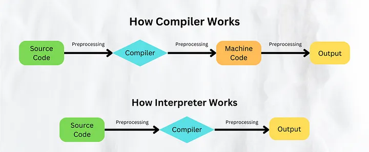
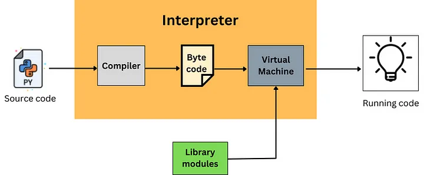
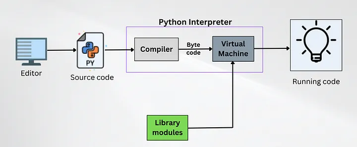

Python is a super popular human-centric language, written in C, which is interpreted line by line in a top down fashion. The primary goal of the creators of Python is to make it easy for humans to understand.
The Python vs C++ Speed Test
Interestingly, Python is known for being many orders of magnitude slower than the language it is written in, C. If you were ever curious about this, take a look at this video. Basically, the video poses two test cases of Python vs C++ (as fast as C), whereby we compare how quickly Python and C++ can count to a billion and print to console.
The end result? C++ did it in 2.4 seconds and Python did it in 1 minute 52 seconds. And, this is not an anomaly. Most operations in Python are much slower than C++/C.
The Famous Python Meme
There is a funny Python meme out there too. The Python meme states, "the most performant way to code in Python is... to not code in Python." Basically, there are libraries out there which allow you to translate Python code to C and run it that way, not in Python basically.
This reaches my other point. The real secret to fast Python is using libraries written in C. Libraries like NumPy, Pandas, and others are written in C and wrapped with Python interfaces. When you use these libraries effectively, you get C-like performance.

Why Python Is So Slow
One of the main reasons Python is so slow, is, that it is interpreted line by line. The translator, which translates Python code to machine language, does this on the fly as your program runs.
This is vastly different from compiled languages like C++ and Java. These languages are compiled before they run. The translation happens once, before execution. Then the program runs on machine code or bytecode that's already been optimized.
Python's interpreted nature means:
- Runtime overhead: Interpretation happens while the program is running
- No optimization: The interpreter can't look ahead and optimize the whole program
- Type checking: Python checks types at runtime, not compile time
- Dynamic nature: Objects can change type, requiring constant checking
The GIL (Global Interpreter Lock)
Another culprit is the GIL (Global Interpreter Lock). In CPython (the default Python implementation), the GIL prevents true multithreading. Only one thread can execute Python bytecode at a time, even on multi-core processors.
This means that even if you have an 8-core processor, Python can only use one core at a time (when using threads). This is a massive limitation for parallel programming.
Why Use Python Then?
Given these limitations, you might ask: why use Python at all? The answer is simple: developer productivity. Writing a Python program that does something useful is much faster than writing the same thing in C++.
Python's simplicity means:
- Faster development time
- Easier to read and maintain
- Larger ecosystem and libraries
- Great for prototyping and data science
How to Make Python Faster
If you need speed in Python, here are some strategies:
- Use NumPy/Pandas: These libraries do the heavy lifting in C
- Use PyPy: An alternative Python implementation that's much faster
- Use Cython: Write C extensions for your critical code
- Use multiprocessing: Bypass the GIL with separate processes
- Profile first: Find the bottlenecks before optimizing
- Consider Numba: JIT compilation for numerical code
Conclusion
Python is slow because it's interpreted line by line and doesn't do compile-time optimization. But it's popular because it's easy to write. For most applications, Python is fast enough. For compute-intensive tasks, use specialized libraries or consider alternatives.
The key is understanding when Python is appropriate and when you need something faster. Most web applications, data science work, and automation scripting are perfectly fine with Python's performance.